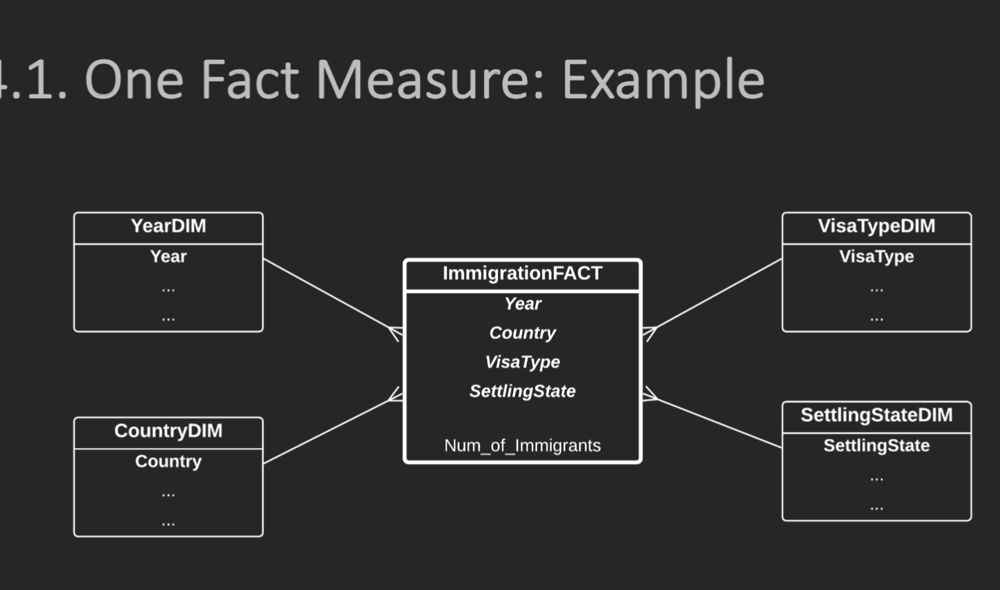
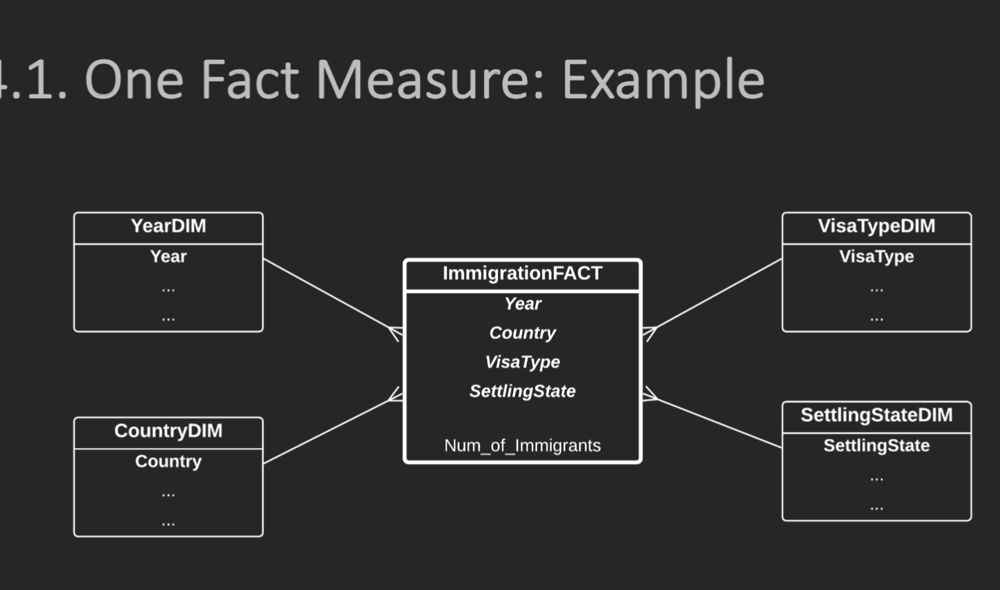
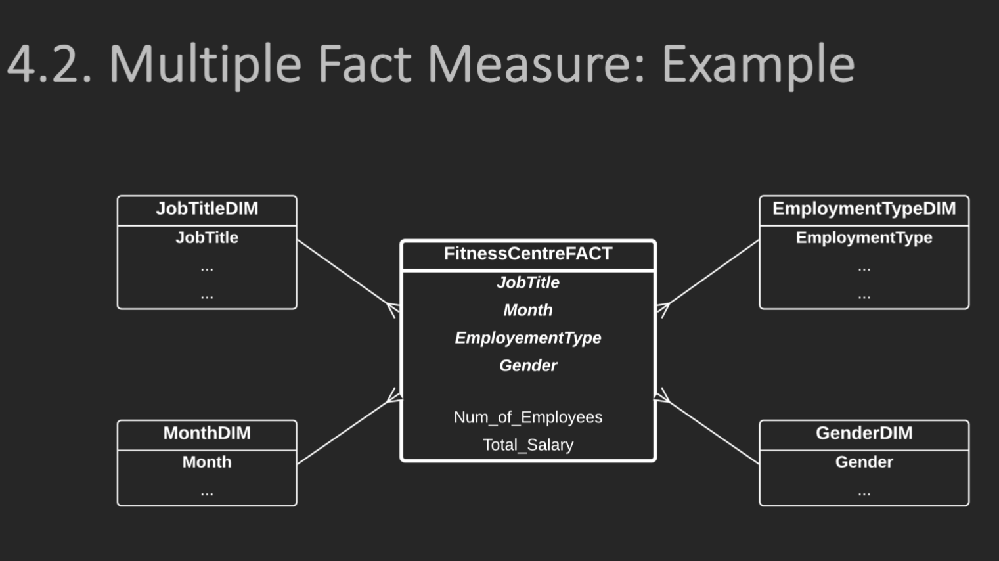
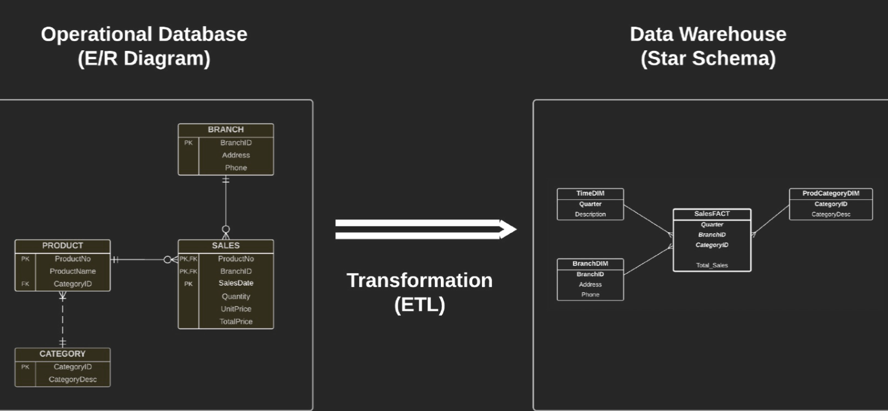
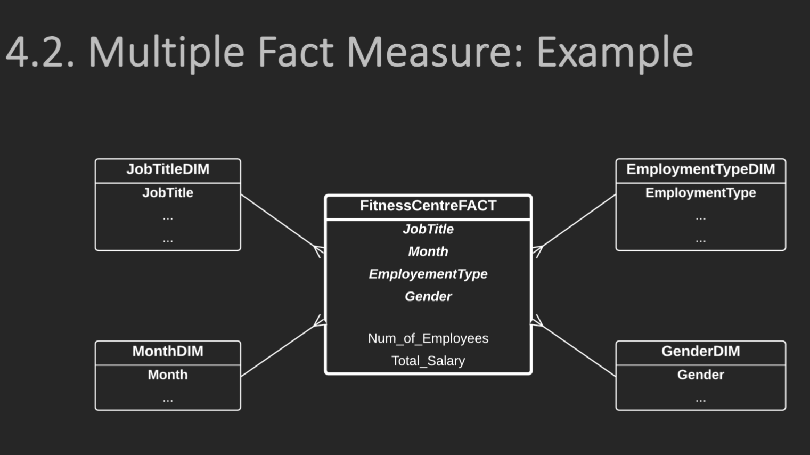
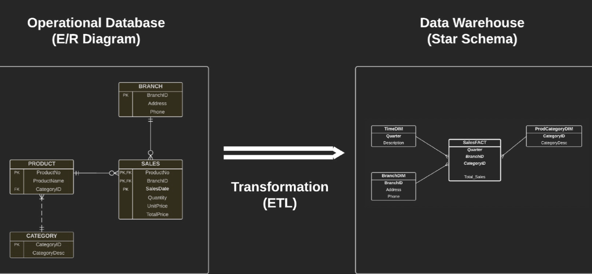

Fit5137
Unit Overview 单位概览#
Welcome to FIT5137 Advanced Database Technology Semester 2, 2023. 欢迎来到 FIT5137 高级数据库技术 2023 年第 2 学期。
This unit provides an in-depth exploration of advanced database technologies, focusing on three main topics: 本单元深入探讨了高级数据库技术，重点关注三个主要主题：
- Data Engineering: 1. 数据工程：
- Data transformation: Techniques for manipulating and converting data to meet specific requirements.
- 数据转换：用于操作和转换数据以满足特定要求的技术。
- Data cleaning: Strategies to identify and rectify errors, inconsistencies, and missing values in datasets.
- 数据清理：识别和纠正数据集中的错误、不一致和缺失值的策略。
- Working with public data: How to access, analyze, and leverage publicly available datasets.
-
使用公共数据：如何访问、分析和利用公开可用的数据集。
-
Data Warehouse: 2. 数据仓库：
- Understanding the concept and architecture of a data warehouse.
- 了解数据仓库的概念和体系结构。
- Designing and querying data warehouses for efficient data retrieval and analysis.
-
设计和查询数据仓库，以实现高效的数据检索和分析。
-
Geospatial Databases: 3. 地理空间数据库：
- Introduction to geospatial data and its unique characteristics.
- 介绍地理空间数据及其独特特征。
- Geospatial database management systems (DBMS) and their features.
- 地理空间数据库管理系统（DBMS）及其功能。
- Spatial data modeling, indexing, and querying techniques.
- 空间数据建模、索引和查询技术。
Throughout this unit, you will gain a comprehensive understanding of these topics and develop practical skills in data engineering, data warehousing, and geospatial databases. 在本单元中，您将全面了解这些主题，并培养数据工程，数据仓库和地理空间数据库方面的实践技能。
| Week 周 | Topics 主题 |
|---|---|
| Week 1 第 1 周 | Introduction to data engineering, Data transformation and data warehousing, SQL revision 数据工程简介、数据转换和数据仓库、SQL 修订版 |
| Week 2 第 2 周 | Star schema modelling and implementation, More advanced dimension modelling 星型架构建模和实现，更高级的维度建模 |
| Week 3 第 3 周 | Case studies of data cleaning in data warehousing, Pre and post data warehousing, Extended fact tables and pivot tables 数据仓库、数据仓库前后、扩展事实数据表和数据透视表中数据清理的案例研究 |
| Week 4 第 4 周 | Concepts of granularity in data warehousing, Designing high and low granularity data warehousing 数据仓库中的粒度概念，设计高粒度和低粒度数据仓库 |
| Week 5 第 5 周 | How to use public data, How to use third party data, Data privacy 如何使用公共数据， 如何使用第三方数据， 数据隐私 |
| Week 6 第 6 周 | Differences between common data analytics and data analytics for data warehousing, Data analytics techniques: clustering and classification 常见数据分析和数据仓库数据分析之间的差异， 数据分析技术：聚类和分类 |
| Week 7 第 7 周 | Introduction to Spatial Databases, Spatial DBMS (PostGIS), Spatial concepts, Spatial objects 空间数据库简介， 空间DBMS （PostGIS）， 空间概念， 空间对象 |
| Week 8 第 8 周 | Spatial SQL, Spatial functions, Spatial distances 空间 SQL， 空间函数， 空间距离 |
| Week 9 第 9 周 | Spatial queries, Spatial SQL, KNN and Range Queries 空间查询、空间 SQL、KNN 和范围查询 |
| Week 10 第 10 周 | Import objects, Spatial data formats, QGIS visualization 导入对象、空间数据格式、QGIS 可视化 |
| Week 11 第 11 周 | Spatial query optimization, Spatial data pre-processing 空间查询优化、空间数据预处理 |
| Week 12 第 12 周 | Roads structure, Trajectories and Trajectory tracker apps 道路结构、轨迹和轨迹跟踪器应用程序 |
| Deadline 限期 | Task Name 任务名称 | Task Content 任务内容 |
|---|---|---|
| Assignment 2 (10%) 作业 2 （10%） | Video Presentation (Individual), Week 8 视频演示（个人），第 8 周 |
Create a 5-minute video presentation discussing topics such as public/3rd party data, data privacy, granularity, and analytics. Utilize materials from lectures and labs covered in week 4-6. 创建 5 分钟的视频演示，讨论公共/第三方数据、数据隐私、粒度和分析等主题。利用第 4-6 周涵盖的讲座和实验室材料。 |
| Assignment 3 (30%) 作业 3 （30%） | Major Assignment-1 (Group), Week 9 主要作业-1（小组），第9周 |
Perform data cleaning and preparation using a public dataset. Collaborate in groups of 2 or 3 students. Utilize the lecture and lab materials from week 4. 使用公共数据集执行数据清理和准备。以 2 或 3 名学生为一组进行协作。利用第 4 周的讲座和实验材料。 |
| Assignment 4 (30%) 作业 4 （30%） | Major Assignment-2 (Group), Week 12 主要作业-2（小组），第12周 |
Conduct geospatial data analysis on public transport accessibility in Melbourne. Collaborate in groups of 2 or 3 students. Utilize the lectures and labs materials covered in week 7-10. 对墨尔本的公共交通可达性进行地理空间数据分析。以 2 或 3 名学生为一组进行协作。利用第 7-10 周涵盖的讲座和实验材料。 |
| Assignment 5 (10%) 作业 5 （10%） | Trajectory Report (Individual), Week 14 轨迹报告（个人），第 14 周 |
Create your own trajectory and write a 1000-word report based on it. Utilize the lectures and labs materials covered in week 11-12. 创建自己的轨迹，并据此编写1000字的报告。利用第 11-12 周涵盖的讲座和实验材料。 |
week 2#
Star Schema Notation#
Star Schema Notation is a graphical representation of a star schema used in data warehousing. A star schema is a type of dimensional modeling where data is organized into a central fact table surrounded by dimension tables. It is called a star schema because the diagrammatic representation resembles a star with the fact table in the center and dimension tables radiating outward like the arms of a star. 星型架构表示法是数据仓库中使用的星型架构的图形表示形式。星型架构是一种维度建模，其中数据被组织到由维度表包围的中央事实数据表中。之所以称为星型模式，是因为图解表示类似于一颗星星，事实表位于中心，维度表像星星的臂一样向外辐射。
In Star Schema Notation, the fact table is represented as a large rectangle in the center, and the dimension tables are represented as smaller rectangles connected to the fact table with lines. Each dimension table represents a different aspect of the data, such as time, geography, or product. 在星型架构表示法中，事实数据表表示为中心的一个大矩形，维度表表示为用线条连接到事实数据表的较小矩形。每个维度表表示数据的不同方面，例如时间、地理位置或产品。
The notation also includes labels or descriptions on the lines connecting the fact table to the dimension tables, specifying the relationship type (e.g., one-to-one, one-to-many) between the tables. 该表示法还包括将事实数据表连接到维度表的线上的标签或说明，指定表之间的关系类型（例如，一对一、一对多）。
This graphical representation helps in visually understanding the structure of the star schema, including the relationships between the tables and the hierarchies within each dimension. It is commonly used in data modeling and data warehousing to design, understand, and communicate the structure of star schemas.
这种图形表示有助于直观地理解星型架构的结构，包括表与每个维度内的层次结构之间的关系。它通常用于数据建模和数据仓库，以设计、理解和传达星型模式的结构。

Fact and Dimensions#
Fact and Dimensions contain attributes
• Each Dimension has a Dimension ID (PK)
• Dimension IDs in Fact are FK and PK
• Fact can only have numerical values
事实和维度包含属性 • 每个维度都有一个维度 ID (PK) • 事实中的维度 ID 为 FK 和 PK • 事实只能有数值
transfer ER to star#
 

 





-
Identify the Fact Table:
标识事实数据表：- Look for the entity in the E/R Diagram that represents the main business transaction or event. This entity will be the fact table in the star schema.
在 E/R 图中查找表示主要业务事务或事件的实体。此实体将是星型架构中的事实数据表。 - Determine the attributes of the fact table, which will become the columns in the fact table.
确定事实数据表的属性，这些属性将成为事实数据表中的列。 -
Identify the Dimension Tables:
标识维度表： -
Identify the entities in the E/R Diagram that are directly related to the fact table.
标识 E/R 图中与事实数据表直接相关的实体。 - Each of these entities will become a dimension table in the star schema.
其中每个实体都将成为星型架构中的维度表。 - Determine the attributes of each dimension table, which will become the columns in the dimension tables.
确定每个维度表的属性，这些属性将成为维度表中的列。 - Include a primary key column in each dimension table to uniquely identify the dimension records.
在每个维度表中包含一个主键列，以唯一标识维度记录。 -
Map the Relationships: 映射关系：
-
Identify the relationships between the fact table and dimension tables in the E/R Diagram.
标识 E/R 图中的事实数据表和维度表之间的关系。 - For each relationship, create a foreign key column in the fact table that references the primary key column of the related dimension table.
对于每个关系，在事实数据表中创建一个引用相关维度表的主键列的外键列。 -
Denormalize the Dimension Tables (Optional):
非规范化维度表（可选）： -
Analyze the attributes in the dimension tables and consider whether denormalization is needed.
分析维度表中的属性，并考虑是否需要非规范化。 - If certain attributes are frequently used together or need to be efficiently queried, you may consider combining them into a single denormalized dimension table to avoid joins.
如果某些属性经常一起使用或需要高效查询，则可以考虑将它们合并到单个非规范化维度表中以避免联接。 -
Design the Star Schema:
设计星型架构： -
Create the tables in the star schema based on the identified fact table and dimension tables.
根据标识的事实数据表和维度表在星型架构中创建表。 - Define the columns of each table based on the identified attributes.
根据标识的属性定义每个表的列。 - Establish the relationships between the fact table and dimension tables using foreign key columns.
使用外键列建立事实数据表和维度表之间的关系。
- Look for the entity in the E/R Diagram that represents the main business transaction or event. This entity will be the fact table in the star schema.
Remember, the E/R Diagram and the star schema serve different purposes. The E/R Diagram is a logical representation of the entities, attributes, and relationships in a system, while the star schema is a specific data modeling technique for data warehousing. The process described above is a general guideline and may vary depending on your specific requirements and the complexity of your E/R Diagram.
请记住，E/R 图和星型模式有不同的用途。E/R 图是系统中实体、属性和关系的逻辑表示形式，而星型架构是用于数据仓库的特定数据建模技术。上述过程是一般准则，可能会根据您的特定要求和 E/R 图的复杂性而有所不同。
Week5#
k-Anonymity#
K-Anonymity is a concept and technique used in privacy and data anonymization to protect sensitive data. It aims to prevent the identification of individuals within a dataset while still allowing useful analysis to be performed. K-Anonymity是一种用于隐私和数据匿名化的概念和技术，以保护敏感数据。它旨在防止在数据集中识别个人，同时仍允许执行有用的分析。
The concept of k-anonymity ensures that each individual's information in a dataset is indistinguishable from at least k-1 other individuals, making it difficult to re-identify a specific person. k-anonymity的概念确保数据集中每个人的信息与至少k-1其他个体无法区分，因此很难重新识别特定的人。
To achieve k-anonymity, certain data transformations are applied to the dataset, such as generalizing or suppressing specific attributes or replacing values with ranges or categories. These transformations ensure that no individual's information can be uniquely distinguished within the dataset. 为了实现 k 匿名性，某些数据转换将应用于数据集，例如概化或禁止显示特定属性，或者将值替换为范围或类别。这些转换可确保在数据集中无法唯一区分任何个人信息。
For example, if a dataset includes age as an attribute, applying k-anonymity might involve replacing specific ages with age ranges (e.g., 20-30, 30-40) to ensure that an individual's age cannot be pinpointed. 例如，如果数据集包含年龄作为属性，则应用 k-anonymity 可能涉及将特定年龄替换为年龄范围（例如，20-30、30-40），以确保无法确定个人的年龄。
The goal of k-anonymity is to balance privacy protection with the usability and utility of the data. By ensuring that each record is sufficiently similar to a group of others, it becomes much more challenging to re-identify individuals. k-anonymity的目标是在隐私保护与数据的可用性和实用性之间取得平衡。通过确保每条记录与其他记录组足够相似，重新识别个人变得更具挑战性。
However, it's important to note that k-anonymity alone may not be sufficient to guarantee complete privacy protection. Additional techniques, such as perturbation, randomization, and differential privacy, may be required to further protect sensitive data. 但是，重要的是要注意，仅靠k-anonymity可能不足以保证完全的隐私保护。可能需要其他技术，例如扰动、随机化和差分隐私，以进一步保护敏感数据。
!-Diversity#
iversity is another concept in privacy and data anonymization that builds upon the foundation of k-anonymity. While k-anonymity focuses on ensuring indistinguishability among individuals, -Diversity adds an additional level of protection by considering the diversity of sensitive attributes within each group of k-anonymous records. 多样性是隐私和数据匿名化的另一个概念，它建立在k-anonymity的基础上。虽然 k-anonymity 侧重于确保个人之间的不可区分性，但 -diversity 通过考虑每组 k 匿名记录中敏感属性的多样性来增加额外的保护级别。
!-Diversity is an extension of k-anonymity that ensures that within each group of k-anonymous records, the sensitive attribute values are diverse enough to prevent unique identification of individuals based on those attributes. ！-多样性是 k-anonymity 的扩展，可确保在每组 k 匿名记录中，敏感属性值足够多样化，以防止基于这些属性对个人进行唯一标识。
For example, consider a dataset with age, gender, and income as attributes. With k-anonymity alone, it may be possible to identify an individual based on their unique combination of age and gender. Adding !-diversity helps by ensuring that there is more diversity in the income attribute within each group of k-anonymous records, making it harder to determine an individual's income solely based on their age and gender. 例如，考虑以年龄、性别和收入作为属性的数据集。仅通过k-anonymity，就可以根据其独特的年龄和性别组合来识别个人。添加 ！-diversity 有助于确保每组 k-anonymous 记录中的收入属性具有更多多样性，从而更难仅根据年龄和性别确定个人的收入。
By incorporating !-diversity, the risk of re-identification based on specific sensitive attribute values is reduced. It provides an additional layer of privacy protection by making it challenging to infer unique characteristics of individuals within each group. 通过合并 ！-diversity，可以降低基于特定敏感属性值重新识别的风险。它提供了额外的隐私保护层，使推断每个群体中个人的独特特征变得具有挑战性。
apply the method#
Original Table: 原始表：
| Postcode 邮政编码 | Age | Nationality 国籍 | Disease_Condition |
|---|---|---|---|
| 12345 | 35 | US | Heart Disease 心脏病 |
| 12345 | 45 | UK | Heart Disease 心脏病 |
| 56789 | 30 | US | Viral Infection 病毒感染 |
| 56789 | 20 | UK | Viral Infection 病毒感染 |
| 56789 | 55 | US | Cancer 癌症 |
Applied k-anonymity to generalize attributes:
应用 k 匿名性来概括属性：
| Postcode 邮政编码 | Age | Nationality 国籍 | Disease_Condition |
|---|---|---|---|
| 123** | 30s | US | Heart Disease 心脏病 |
| 123** | 40s | UK | Heart Disease 心脏病 |
| 567** | 30s | US | Viral Infection 病毒感染 |
| 567** | 20s | UK | Viral Infection 病毒感染 |
| 567** | 50s | US | Cancer 癌症 |
Applied !-diversity to enhance diversity:
应用多样性来增强多样性：
| Postcode 邮政编码 | Age | Nationality 国籍 | Disease_Condition |
|---|---|---|---|
| 123** | 30s | US | Heart Disease 心脏病 |
| 123** | 40s | UK | Heart Disease 心脏病 |
| 567** | 30s | US | Viral Infection 病毒感染 |
| 567** | 20s | UK | Viral Infection 病毒感染 |
| 567** | 50s | US | Random1 随机1 |
| 567** | 50s | US | Random2 随机2 |
In this example, we initially applied k-anonymity by generalizing the Postcode to the first three digits, and the Age to age ranges (e.g., 30s, 40s). This ensures that each group has at least two similar records.
在这个例子中，我们最初通过将邮政编码推广到前三位数字，将年龄推广到年龄范围（例如，30多岁、40多岁）来应用 k-anonymity。这可确保每个组至少有两个类似的记录。
Next, we applied !-diversity by introducing diversity within each group. In the last two rows, we replaced the original "Disease_Condition" values with random values (e.g., Random1, Random2). This adds an additional layer of protection and prevents exact identification of the underlying disease condition for those individuals.
接下来，我们通过在每个组中引入多样性来应用！-diversity。在最后两行中，我们将原始的“Disease_Condition”值替换为随机值（例如，Random1，Random2）。这增加了一层额外的保护，并防止准确识别这些人的潜在疾病状况。
t-closeness#
T-closeness is a privacy concept and technique used in data anonymization to protect sensitive data. It extends the concepts of k-anonymity and !-diversity by ensuring that the distribution of sensitive attributes within each group is similar to the overall distribution in the entire dataset.
T-closeness是一种隐私概念和技术，用于数据匿名化以保护敏感数据。它通过确保每个组中敏感属性的分布与整个数据集中的整体分布相似来扩展 k-anonymity 和 ！-diversity 的概念。
The goal of t-closeness is to prevent the leakage of sensitive information by reducing the risk of re-identification or attribute disclosure through the distribution of sensitive attribute values.
t-closeness 的目标是通过分发敏感属性值来降低重新识别或属性泄露的风险，从而防止敏感信息泄露。
In a t-closeness model, a parameter "t" is defined, which represents the maximum allowed difference in distribution between the sensitive attribute values within a group and the overall dataset.
在 t 接近度模型中，定义了一个参数“t”，该参数表示组中敏感属性值与整个数据集之间允许的最大分布差异。
To achieve t-closeness, the following steps are typically followed:
要实现 t 接近度，通常遵循以下步骤：
-
Partition the dataset into groups based on the generalized attributes (such as age, gender, or location) using k-anonymity.
使用 k-anonymity 根据通用属性（例如年龄、性别或位置）将数据集划分为多个组。 -
Compute the distribution of the sensitive attribute values within each group.
计算每个组中敏感属性值的分布。 -
Measure the distance between the distribution of the sensitive attribute values in each group and the overall dataset distribution (e.g., using methods like Jensen-Shannon divergence or earth mover's distance).
测量每个组中敏感属性值的分布与整体数据集分布之间的距离（例如，使用 Jensen-Shannon 散度或推土机距离等方法）。 -
Ensure that the distance metric is less than or equal to the defined "t" parameter to achieve t-closeness. If the distance exceeds the threshold, additional privacy measures, such as data perturbation or suppression, may be required.
确保距离度量小于或等于定义的“t”参数以实现 t 接近度。如果距离超过阈值，则可能需要采取其他隐私措施，例如数据扰动或抑制。
apply t-closeness#
Original Table: 原始表：
| Postcode 邮政编码 | Age | Nationality 国籍 | Disease_Condition |
|---|---|---|---|
| 12345 | 35 | US | Heart Disease 心脏病 |
| 12345 | 45 | UK | Heart Disease 心脏病 |
| 56789 | 30 | US | Viral Infection 病毒感染 |
| 56789 | 20 | UK | Viral Infection 病毒感染 |
| 56789 | 55 | US | Cancer 癌症 |
Applied k-anonymity to generalize attributes:
应用 k 匿名性来概括属性：
| Postcode 邮政编码 | Age | Nationality 国籍 | Disease_Condition |
|---|---|---|---|
| 123** | 30s | US | Heart Disease 心脏病 |
| 123** | 40s | UK | Heart Disease 心脏病 |
| 567** | 30s | US | Viral Infection 病毒感染 |
| 567** | 20s | UK | Viral Infection 病毒感染 |
| 567** | 50s | US | Cancer 癌症 |
For t-closeness, we need to consider the distribution of the "Disease_Condition" attribute within each group compared to the overall dataset:
对于t-closeness，我们需要考虑每个组中“Disease_Condition”属性与整体数据集的分布：
Overall "Disease_Condition" distribution:
总体“Disease_Condition”分布：
- Heart Disease: 2 cases (40%)
心脏病： 2 例 （40%） - Viral Infection: 2 cases (40%)
病毒感染：2例（40%） - Cancer: 1 case (20%)
癌症：1例（20%）
Group 1 (123): 第1组（123）：
- Heart Disease: 2 cases (100%)
心脏病：2例（100%） - Viral Infection: 0 cases (0%)
病毒感染： 0 例 （0%） - Cancer: 0 cases (0%)
癌症： 0 例 （0%）
Group 2 (567): 第2组（567）：
- Heart Disease: 0 cases (0%)
心脏病： 0 例 （0%） - Viral Infection: 2 cases (100%)
病毒感染：2例（100%） - Cancer: 1 case (50%)
癌症：1例（50%）
In this example, let's assume our t-closeness threshold is set to 0.2 (20% maximum difference).
在此示例中，假设我们的 t 接近阈值设置为 0.2（20% 最大差值）。
For Group 1, the "Disease_Condition" distribution only includes Heart Disease, which differs from the overall distribution. To achieve t-closeness, we can introduce artificial diversity within Group 1:
对于第 1 组，“Disease_Condition”分布仅包括心脏病，这与整体分布不同。为了实现t-closeness，我们可以在第1组中引入人工多样性：
Modified Group 1: 修改组 1：
| Postcode 邮政编码 | Age | Nationality 国籍 | Disease_Condition |
|---|---|---|---|
| 123** | 30s | US | Heart Disease 心脏病 |
| 123** | 40s | UK | Heart Disease 心脏病 |
| 123** | 40s | US | Viral Infection 病毒感染 |
Now the modified "Disease_Condition" distribution within Group 1 becomes:
现在，组 1 中修改后的“Disease_Condition”分布变为：
- Heart Disease: 2 cases (66.66%)
心脏病：2例（66.66%） - Viral Infection: 1 case (33.33%)
病毒感染：1例（33.33%） - Cancer: 0 cases (0%)
癌症： 0 例 （0%）
By adding diversity to Group 1, the distribution of "Disease_Condition" values becomes closer to the overall distribution, achieving t-closeness.
通过将多样性添加到组 1，“Disease_Condition”值的分布更接近整体分布，从而实现 t 接近。
In Group 2, the "Disease_Condition" distribution already includes multiple conditions, and it aligns with the overall distribution. Therefore, no modifications are required in this case.
在第 2 组中，“Disease_Condition”分布已包含多个条件，并且它与整体分布一致。因此，在这种情况下不需要修改。
This demonstrates how t-closeness aims to align the distribution of sensitive attribute values within each group with the overall dataset's distribution, reducing the risk of attribute disclosure and ensuring strong privacy protection.
这展示了 t-closeness 旨在使每个组中敏感属性值的分布与整个数据集的分布保持一致，从而降低属性泄露的风险并确保强大的隐私保护。
data anatomy analysis#
In the context of data privacy, "anatomy" refers to the detailed understanding and analysis of data in order to identify and protect sensitive information. It involves examining the structure, content, and relationships within a dataset to determine the types of data present and the potential risks associated with them.
在数据隐私的背景下，“剖析”是指对数据的详细理解和分析，以识别和保护敏感信息。它涉及检查数据集中的结构、内容和关系，以确定存在的数据类型以及与之相关的潜在风险。
The goal of conducting an anatomy is to gain insights into the data's privacy characteristics, such as the presence of personally identifiable information (PII), protected health information (PHI), financial information, or any other sensitive data elements that may require protection. By understanding the anatomy of data, organizations can implement appropriate security measures and privacy controls to safeguard sensitive information against unauthorized access or disclosure.
进行剖析的目的是深入了解数据的隐私特征，例如是否存在个人身份信息 （PII）、受保护的健康信息 （PHI）、财务信息或任何其他可能需要保护的敏感数据元素。通过了解数据的剖析，组织可以实施适当的安全措施和隐私控制，以保护敏感信息免受未经授权的访问或披露。
how vertical partitioning can be used in data anatomy analysis#
Original Table: 原始表：
| Customer ID 客户编号 | Name 名字 | Address 地址 | Email 电子邮件 | Phone 电话 |
|---|---|---|---|---|
| 123 | John Doe 无名氏 | 123 Main Street 123大街 | johndoe@example.com | 555-123-4567 |
| 456 | Jane Smith 简·史密斯 | 456 Elm Street 456榆树街 | janesmith@example.com | 555-987-6543 |
| 789 | Bob Brown 鲍勃·布朗 | 789 Oak Street 789橡树街 | bobbrown@example.com | 555-555-5555 |
In this example, we can use vertical partitioning to logically group and separate sensitive and non-sensitive data elements into different tables. Let's assume that the "Name" and "Email" attributes are considered sensitive data in this scenario:
在此示例中，我们可以使用垂直分区将敏感和非敏感数据元素逻辑分组和分离到不同的表中。假设在这种情况下，“名称”和“电子邮件”属性被视为敏感数据：
Sensitive Data Table: 敏感数据表：
| Customer ID 客户编号 | Name 名字 | Email 电子邮件 |
|---|---|---|
| 123 | John Doe 无名氏 | johndoe@example.com |
| 456 | Jane Smith 简·史密斯 | janesmith@example.com |
| 789 | Bob Brown 鲍勃·布朗 | bobbrown@example.com |
Non-Sensitive Data Table:
非敏感数据表：
| Customer ID 客户编号 | Address 地址 | Phone 电话 |
|---|---|---|
| 123 | 123 Main Street 123大街 | 555-123-4567 |
| 456 | 456 Elm Street 456榆树街 | 555-987-6543 |
| 789 | 789 Oak Street 789橡树街 | 555-555-5555 |
By vertically partitioning the data, we separate the sensitive attributes (Name and Email) into a dedicated table, while the remaining non-sensitive attributes (Address and Phone) are stored in another table. This partitioning allows us to apply different security controls and access restrictions based on the sensitivity of the data.
通过对数据进行垂直分区，我们将敏感属性（姓名和电子邮件）分离到一个专用表中，而其余的非敏感属性（地址和电话）存储在另一个表中。这种分区允许我们根据数据的敏感性应用不同的安全控制和访问限制。
Through data anatomy analysis, we can now easily identify and protect sensitive data by focusing on the Sensitive Data Table. This allows us to implement stricter controls, such as encryption, access restrictions, and auditing on the sensitive attributes, while handling the non-sensitive attributes with less stringent controls.
通过数据剖析分析，我们现在可以通过专注于敏感数据表来轻松识别和保护敏感数据。这使我们能够对敏感属性实施更严格的控制，例如加密、访问限制和审核，同时使用不太严格的控制来处理非敏感属性。
Vertical partitioning helps in minimizing the risk of unauthorized access or exposure of sensitive data since it segregates the sensitive attributes into a separate table, making it easier to enforce privacy policies and apply additional security measures if needed. It also enables organizations to simplify compliance efforts by applying specific controls only where necessary, reducing the attack surface and potential impact of a data breach.
垂直分区有助于最大程度地降低未经授权访问或泄露敏感数据的风险，因为它将敏感属性隔离到单独的表中，从而更轻松地实施隐私策略并在需要时应用其他安全措施。它还使组织能够仅在必要时应用特定控制来简化合规性工作，从而减少数据泄露的攻击面和潜在影响。
Differential privacy#
Differential privacy is a privacy framework that provides a mathematical definition and methodology for preserving the privacy of individuals when analyzing or releasing statistical data. It aims to enable the analysis of aggregate data while minimizing the risk of revealing sensitive information about specific individuals within the dataset.
差分隐私是一种隐私框架，它提供了一个数学定义和方法，用于在分析或发布统计数据时保护个人隐私。它旨在对汇总数据进行分析，同时最大限度地降低在数据集中泄露有关特定个人的敏感信息的风险。
The main goal of differential privacy is to add noise or randomness to the query results or data to prevent the identification of any individual's contribution to the dataset. Differential privacy ensures that the statistical results or insights obtained from the modified data are still accurate and useful, while protecting the privacy of individuals.
差分隐私的主要目标是向查询结果或数据添加噪声或随机性，以防止识别任何个人对数据集的贡献。差分隐私确保从修改后的数据中获得的统计结果或见解仍然准确和有用，同时保护个人隐私。
demonstrate how differential privacy can be applied to protect individual privacy#
Original Table (Survey Responses):
原始表格（调查回复）：
| Respondent ID 受访者编号 | Age Group 年龄组 | Has Medical Condition 有医疗状况 |
|---|---|---|
| 1 | 20-30 | Yes |
| 2 | 30-40 | No |
| 3 | 40-50 | Yes |
| 4 | 20-30 | No |
| 5 | 50-60 | Yes |
| 6 | 30-40 | No |
To achieve differential privacy, we need to introduce random noise into the analysis while ensuring that the privacy of individuals is preserved. Let's focus on computing the percentage of individuals in each age group who have a medical condition.
为了实现差分隐私，我们需要在分析中引入随机噪声，同时确保保护个人隐私。让我们专注于计算每个年龄组中患有疾病的人的百分比。
Modified Table with Noise:
修改后的带噪声表：
| Age Group 年龄组 | Has Medical Condition 有医疗状况 |
|---|---|
| 20-30 | Yes |
| 30-40 | No |
| 40-50 | Yes |
| 20-30 | Yes |
| 50-60 | Yes |
| 30-40 | No |
To compute the percentage of individuals in each age group with a medical condition, we add random noise to the counts while preserving privacy. Let's say we add Laplace noise with a privacy parameter (ε) of 0.5 to each count:
为了计算每个年龄组中患有疾病的人的百分比，我们在保护隐私的同时将随机噪声添加到计数中。假设我们将隐私参数 （ε） 为 0.5 的拉普拉斯噪声添加到每个计数中：
| Age Group 年龄组 | Has Medical Condition 有医疗状况 |
|---|---|
| 20-30 | Yes |
| 30-40 | No |
| 40-50 | Yes |
| 20-30 | Yes |
| 50-60 | Yes |
| 30-40 | No |
After adding the noise, the computation of percentages is as follows:
添加噪声后，百分比的计算如下：
- Age Group 20-30: 2 individuals have a medical condition (Noisy count: 2)
20-30岁年龄组：2人有健康问题（噪音计数：2） - Age Group 30-40: 0 individuals have a medical condition (Noisy count: 0)
年龄组 30-40： 0 个人有健康问题 （噪音计数： 0） - Age Group 40-50: 1 individual has a medical condition (Noisy count: 1)
年龄组 40-50：1 人有健康问题（噪音计数：1） - Age Group 50-60: 1 individual has a medical condition (Noisy count: 1)
50-60岁年龄组：1人患有疾病（噪音计数：1）
Now, we can compute the percentage of individuals in each age group with a medical condition:
现在，我们可以计算每个年龄组中患有疾病的人的百分比：
- Age Group 20-30: 100% (Noisy Percentage: 100%)
20-30岁年龄组：100%（噪音百分比：100%） - Age Group 30-40: 0% (Noisy Percentage: 0%)
年龄组 30-40： 0% （噪音百分比： 0%） - Age Group 40-50: 50% (Noisy Percentage: 50%)
40-50岁年龄组：50%（噪音百分比：50%） - Age Group 50-60: 100% (Noisy Percentage: 100%)
50-60岁年龄组：100%（噪音百分比：100%）
By adding random noise, we have protected the privacy of individuals while providing approximate aggregate insights. The noisy counts and percentages ensure that it becomes very difficult to identify the individual responses accurately.
通过添加随机噪声，我们保护了个人隐私，同时提供了近似的汇总见解。嘈杂的计数和百分比确保准确识别单个响应变得非常困难。